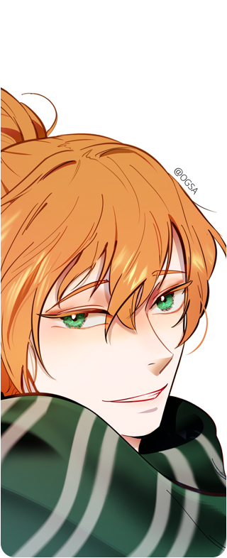
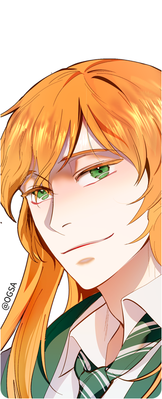
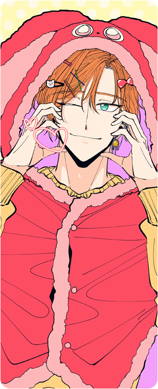
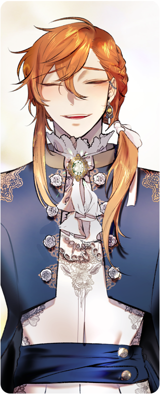
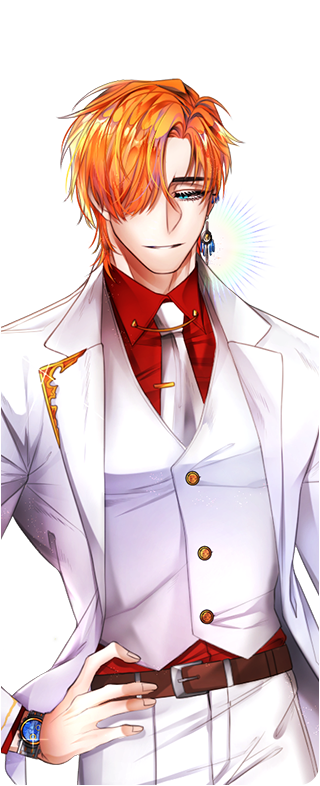
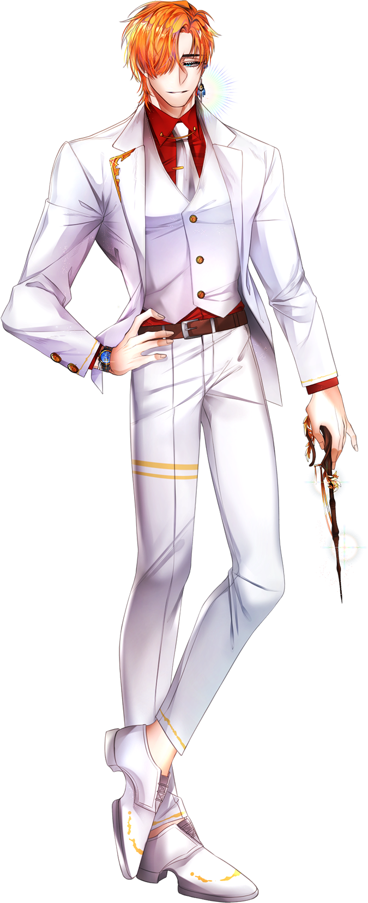

Ryan Credne Gardner
라이언 크레드네 가드너





[ 악당의 미학 ]
“ 저 듣는 것도 제법 잘합니다? ”
나이
29세
기숙사
슬리데린
“조금 더 프라이드를 가져도 좋을 텐데 말이다.”
진영
죽음을 먹는 자
직업
오러
국적
영국인
혈통
순수혈통
키/무게
188cm/92kg
성별
시스젠더 남성
지팡이
소나무/용의 심/11인치/꽤 나긋나긋함
성격
# 항상성
도대체 무엇이 달라졌지? 도무지 알 길이 없다. 10년이면 강산도 변한다는데, 졸업 후 우리는 10년의 세월을 흘려 보냈다. 뭐라도 하나 달라져야 맞지 않던가? 라이언 가드너는 10년 전 졸업앨범으로부터 걸어나오기라도 한 것처럼 여전했다. 서글서글한 성품. 만사에 둥글고자 하는 사람. 깊이 대화를 나눠보기 전까지는 잘 드러나지 않는, 그러나 언제나 그의 모든 태도에 배어 있었던 조금 모난 구석 하나까지. 바꿔 질문하자면, 아무 일도 없었던 이에게 대체 무슨 변화가 일어나겠나? 가만히 있는 바위는 깎이고 마모되지 않는다. 라이언은 물론 이것을 서글픈 항상성이라고 논하겠으나.
# 미스테리
명확하지 않은 태도와 의견을 견지하는 수사관에게 무슨 의미가 있고 가치가 있는가는 차치하고, 그는 여전히 제게 불리한 일에는 함구한다. 생각에 잠길지언정, 답하지 않는 이다. 언제나 대화를 나누고 있는 대화 상대가 원하는 대답을 계산하여 들려주며, 스스로의 생각이나 판단은 별로 중요하지 않다는 스탠스를 견지한다. 그리고 실제로 그가 무슨 생각을 하고 무슨 꿈을 꾸는가는 그리 중요하지도 않을 것이다.
# 회피성 소시민
근황을 묻는다면 그는 소시민의 삶에 적응한 것으로 보인다. 그린고트에 꾸준히 적금을 들고 있고, 역시 내 집 마련이 쉽지 않아 주택 관련 정보를 가끔 찾아보고 있으며, 마트 할인 시간, 혼자서 생활을 꾸려 나가면서 얻은 자잘한 팁, 마치 그러한 것에나 관심이 있다는 듯이. 직장 상사가 두 눈 부릅뜨고 쳐다보고 있는 곳이 아니라면 피로한 사상 논쟁을 하고 싶지 않다는 모양이다. 안 그래도 최근까지 외근에 시달리다 왔고, 솔직한 심정을 토로하자면 지금 당장 하고 싶은 일도 퇴근해서 소파에 누워 한잠 늘어지게 자는 것이라나. 실없는 사람.
기타
● 어머니 에포나 가드너, 아버지 존 오스카 가드너, 여동생 그웬 네메토나 가드너. 가드너 가문은 오랫동안 다이애건 앨리에서 세공품을 판매하는 공방을 운영했고, 어머니는 따로 직업을 가지고 계셨어서 법의학자로 근무했다. 공방 자체는 그리 유명하지 않았고, 부유하지도 않았다. 그저 오래된 순수혈통 가문들의 상징적인 액세서리 등을 세공해주며 근근이 먹고 사는 평범한 마법사 가족이다. (돈이 많기로는 외가가 많은 것 같지만 방계라 별로 물려받은 부는 없다.)
● 가드너 공방
그의 여동생 그웬 가드너가 졸업한 후, 공방 자체는 유례 없는 천재 세공사가 일선에 가담한 덕택에 무리 없이 가족 사업을 이어나가고 있다. 그러나 공방을 지키는 두 세공사(존 가드너와 그웬 가드너 부녀)가 그리 마진을 잘 따지는 사업가들은 아니라, 여전히 아는 사람은 아는 작은 규모를 유지한다. 공방 자체가 커졌다기 보다는, 부엉이 우편으로 들어오는 의뢰 주문이 전보다 늘어난 정도. 전쟁이나 사회 돌아가는 꼴엔 여전히 큰 관심 없는 예술가 집단.
라이언은 여전히 가족과 연락한다. 명절이면 공방을 방문하고, 부모님과 여동생에게 안부를 전한다. 근래엔 라이언이 오러로 근무하면서 여름이면 돌아오는 외할머니 생신이 외가 친척들과 다같이 모이는 대친척모임이 될 때가 많아졌다. 그때마다 ‘너 결혼은 언제’ 같은 잔소리를 듣기 때문에 라이언과 그웬은 이 대가족 모임을 살짝 부담스러워 하는 눈치다.
● 그의 외가, 녹턴 가문
라이언의 외가, 오러 및 탐정 관련 직종에 종사하는 사람이 많은 수사관 가문이다. 그들은 다소 정치에 연루된 것처럼 보이나-직종 탓에-서로의 행보에 가주가 간섭하거나 하진 않는다. 각자의 정의는 각자가 판단하는 것, 단 ‘우리는 남이 아니기 때문에’ 가족 중에 누군가가 도움을 요청한다면 기꺼이 돕는다는 태도 정도를 견지한다. 까닭에 라이언에게 녹턴 친척들이 어느 쪽 편을 들었느냐고 물어봐야 누구는 어느 편, 또 누구는 저쪽 편, 누구는 중립, 그런 중구난방의 대답이 튀어나온다. 가주 아저씨가 프리한 영혼이라 별 수가 없다는 모양.-그런 것을 보아 이쪽도 가드너 못지 않게 정치에 무관심하다.-
라이언이 오러로 재직하면서 녹턴 인맥에 도움을 많이 받았음은 물론이다. 주로 승진보다는 머글 태생의 지인들이나 혼혈들을 구제하러 다닐 때 녹턴 친척 어르신들이 라이언의 행보를 마법 정부에 옹호해준 정도였다. (덕분에 잘리진 않았다….) 친척 어르신들은 라이언더러 철 좀 들라고 얼굴 보일 때마다 잔소리를 했지만, 막상 라이언은 ‘아, 그렇다고 아는 사람들을 모르는 척 합니까?’ 정도의 반응을 보였다. 여전히 대가족의 면모가 짙다.
● 태어나기로는 웨일스 카디프에서 태어났다. 미들네임은 외가의 전통에 따라 켈트 신화에 등장하는 신의 이름을 땄다. 자라기는 거의 런던의 다이애건 앨리에서 자랐다. 다만 어머니 가족이 카디프에 사셨던 까닭에 태어난 게 거기고, 방학이면 가끔 카디프에 있는 외할머니 댁에 놀러가는 정도다. 그러나 본인은 아버지의 공방이 있는 런던보다 카디프에서 지낸 시간을 좋아한다고. 아무래도, 공방은 일하는 공간이라 즐겁기 어렵단다.
● 20살에 오러 시험에 합격했으나 상기한 ‘머글 혈통 지인들이 곤란할 적마다 가끔씩 도와주느라 사고 친 경력’ 때문에 승진은 느릿느릿한 편이다. 별로 많이 도와준 것도 아닌데 근래 마왕의 세력이 장악한 상부에 좀 찍히기라도 한 것인지, 아니면 녹턴의 위세를 업어도 가드너 가문 자체는 한미해서 빛 보기가 어려웠던 건지 진위 여부는 알 수 없다. -그렇다고 상관에게 본인을 싫어하냐고 대놓고 물을 수는 없는 노릇이니.- 본인은 별 생각 없단다. 지금까지야 그랬지만, 앞으로는 또 어떻게 될지 모를 일이니까. 여전히 거의 말단에 가깝다.
● 근래에 외근과 출장이 잦았다. 그래서인지 피곤한 상태는 맞다고. 원래는 커피보단 홍차를 좋아했는데, 직장 다니면서 직장에선 포션 개념으로 커피를 즐겨 마시게 됐다. 쉬는 날에는 여유롭게 차를 마시는 게 좋다는 모양.
● 흡연은 하지 않고, 술은 좋아한다. 비싼 것보단 그냥 맥주가 좋다고. 주량 자체는 평범하고, 주사도 평범하다. 좀 텐션이 올라가서 잘 놀다가 얌전히 잘 들어가서 잔다. 흡연에 손 대지 않은 이유는 오러라는 직군에 종사하다 보니 체력 유지를 무시하기가 어려워서. 같은 이유로 술도 좋아하지만 자주 마시지는 못하는 실정.
● 유년 시절부터 지금까지, 자신보다 두 살 어린 녹턴 가문의 친척 누아다 녹턴이나 여동생 그웬 가드너 등 소위 ‘튀는 인간’들 사이에서 ‘평범한 주변인’으로 살아왔다. 타고난 기질은 주연의 자리를 원하는데 영원히 비교당하고, 겉돌고, 아무것도 아닌 포지션에 머무는 삶에 상당한 권태를 느낀다. 기본적으로 자존감도 낮고 자존심도 없다. 윤리 의식은 더 모자라다, 오로지 갈망이 선명한 사람.
● 23살 되던 무렵부터 주로 기사단 토벌 관련 임무를 하달받고 움직였으며, 초기에는 그러한 사실을 불편하게 생각했다. 단순히 제 주변 사람들이 곤란에 빠지는 걸 두고 못 보는 성격이라 나섰던 것뿐인데 차별 철폐를 주장하는 집단을 토벌하라는 임무를 다른 사람도 아니고 자신에게 주기적으로 요구한다니 말이다. 오러국 상부가 라이언의 행보에 기분이 단단히 상하기라도 한 것일까? 혹은 말단 오러가 뭘 하고 다니는지 관심이 없어서 그냥 부려먹기 좋은 사람에게 극악한 임무를 떠맡기는 것이던가. 어느 쪽이든 분명 초기엔 그리 유쾌한 일이 아니었고, 까닭에 토벌에 나설 적마다 얼굴을 숨기거나, 혹은 그 시기에 자신의 튀는 머리색을 물들여서 정체를 감춰보려 애쓰기도 했다. 문제는, 이 토벌 임무가 지속되면서 라이언의 안에서 어그러지지 말았어야 하는 부분이 어그러지고 금이 간 데에 있다.
● 토벌전에서 마주한 불사조 기사단원-그의 아는 후배였던 이, 혹은 아는 선배였던 사람들-의 강렬한 눈빛 속에서 자신이 실존한다고 느꼈다. 태어나 처음으로 자신에게 조연 아닌 악역, 주연에 가까운 역할이 떨어진 것 같다는 데에서 오는 희열이 있다. 그는 그들의 시선 속에서 실존한다. 적수인 그들의 강렬한 원망과 증오 속에서만 빛을 받는 사람이란 말이다.
사상 같은 건 아무래도 좋았다. 뭐가 옳은지 그런 게 뭐가 중요하겠는가? 그는 난생 처음 받는 그 스포트라이트, 악역으로서의 강렬한 소속감과 정체성에 사로잡혀 점차 악독한 오러가 되어갔다. 죽음을 먹는 자가 되었고, 토벌전에 가장 적극적으로 모습을 드러내는 오러로 악명이 나기 시작했다. 머리카락을 도로 그 눈에 띄는 색으로 돌려놓았다. 얼굴을 숨기지 않게 되었다. 그래, 아는 사람은 다 아는 사실이다. 라이언 크레드네 가드너가 사회악으로 돌아왔다. 그는 악당으로서만 이 우주에 실존한다.
